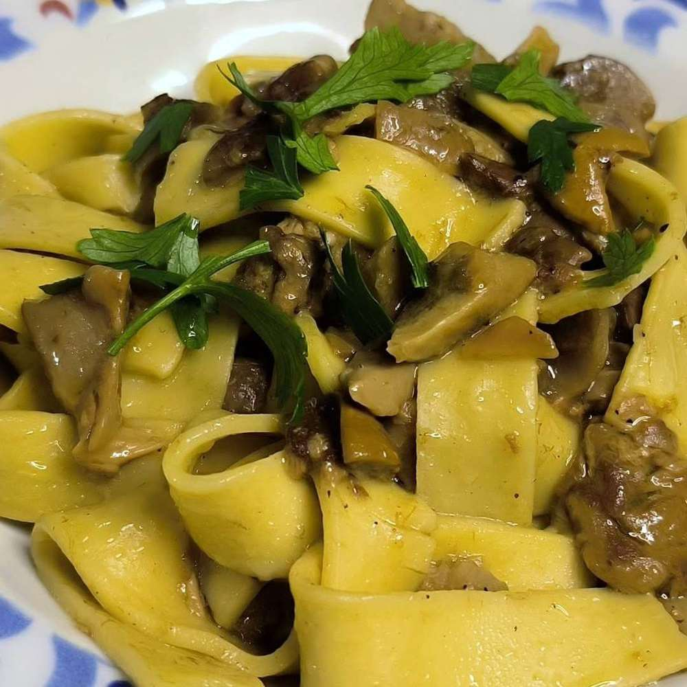
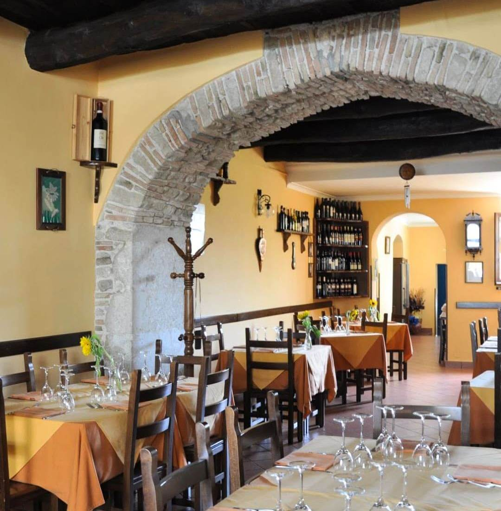
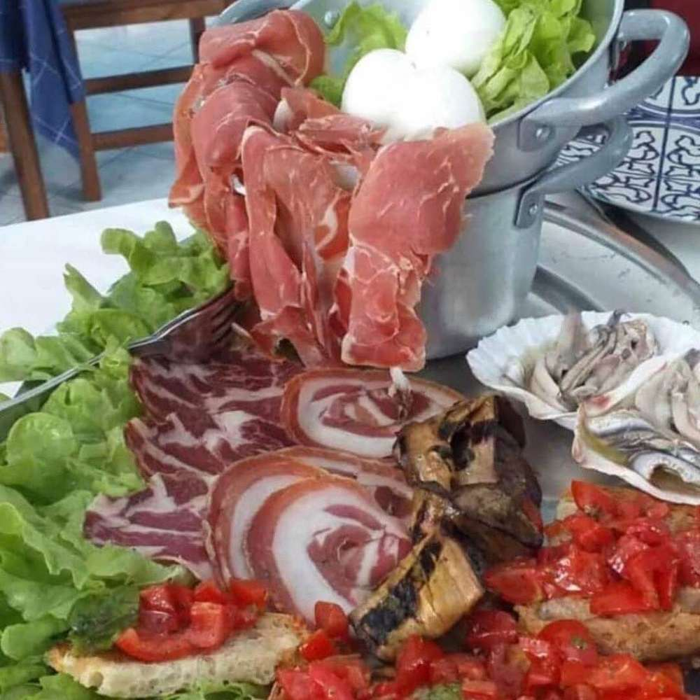
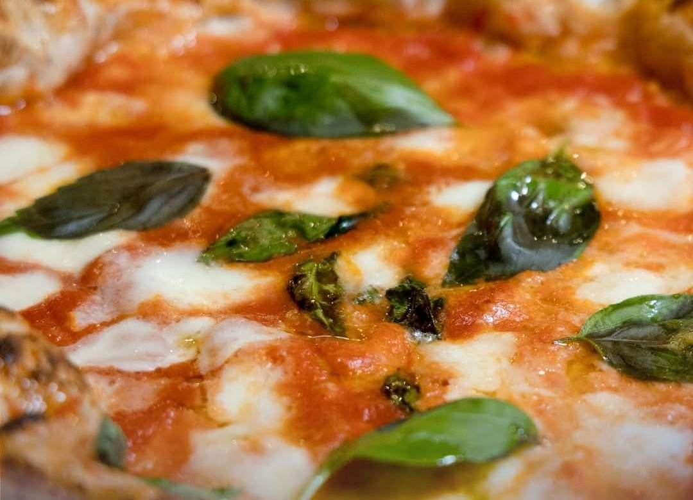
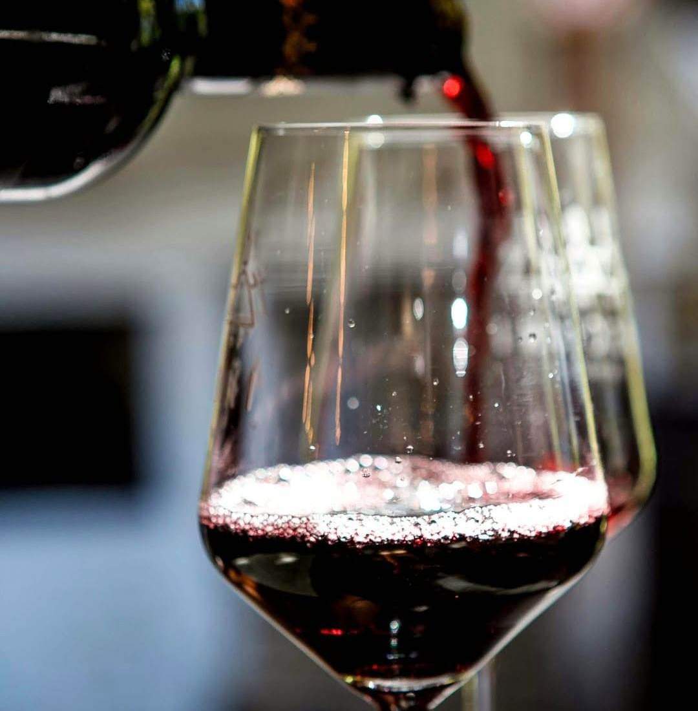

Pasta fatta a mano
Lavorata ogni giorno, come da ricetta di famiglia.

Specialità di carne alla brace, pasta fatta a mano, un'atmosfera semplice e genuina nel borgo.
Piatti tipici della tradizione irpina, scelti e preparati come si fa in famiglia.

Lavorata ogni giorno, come da ricetta di famiglia.

Salumi, formaggi e bruschette, per iniziare come si deve.

Impasto leggero, cotta come vuole la tradizione.

Vini scelti per accompagnare la cucina di casa, serviti con la stessa cura di un piatto.
4.6/5
308 recensioni Google
Chiuso il mercoledì.